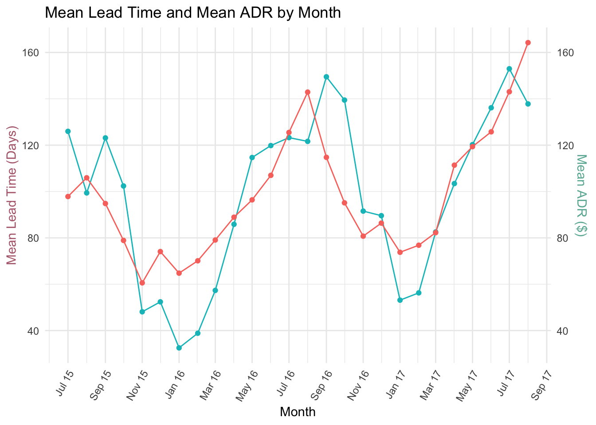
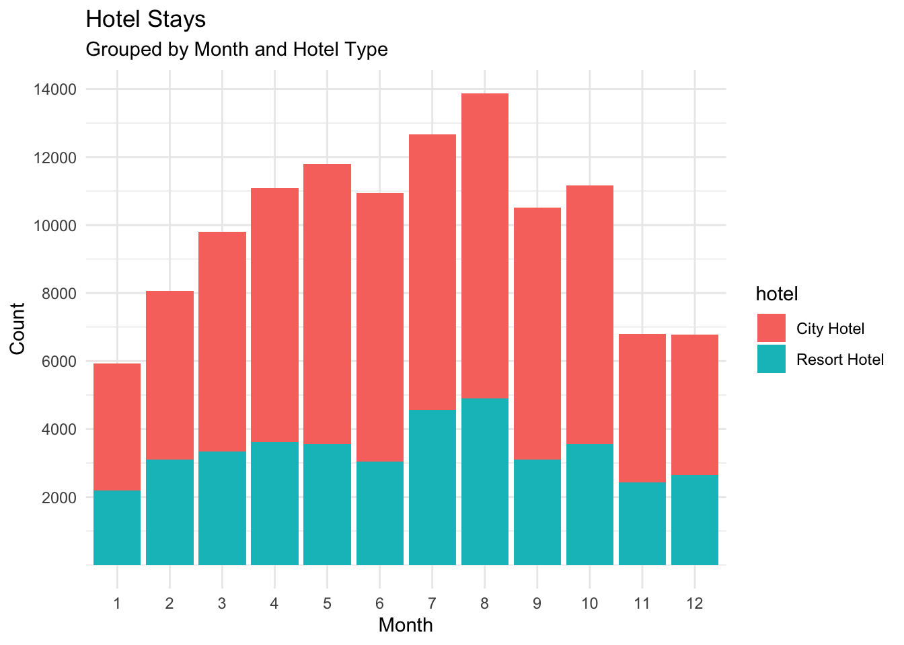

library(tidyverse)
library(ggplot2)
library(lubridate)
knitr::opts_chunk$set(echo = TRUE, warning=FALSE, message=FALSE)Challenge 6 - Hotel Bookings
challenge_6
hotel_bookings
Joseph Vincent
Visualizing Time and Relationships
Reading in hotel data
- hotel_bookings ⭐⭐⭐⭐
hoteldata <- read.csv("_data/hotel_bookings.csv")
head(hoteldata) hotel is_canceled lead_time arrival_date_year arrival_date_month
1 Resort Hotel 0 342 2015 July
2 Resort Hotel 0 737 2015 July
3 Resort Hotel 0 7 2015 July
4 Resort Hotel 0 13 2015 July
5 Resort Hotel 0 14 2015 July
6 Resort Hotel 0 14 2015 July
arrival_date_week_number arrival_date_day_of_month stays_in_weekend_nights
1 27 1 0
2 27 1 0
3 27 1 0
4 27 1 0
5 27 1 0
6 27 1 0
stays_in_week_nights adults children babies meal country market_segment
1 0 2 0 0 BB PRT Direct
2 0 2 0 0 BB PRT Direct
3 1 1 0 0 BB GBR Direct
4 1 1 0 0 BB GBR Corporate
5 2 2 0 0 BB GBR Online TA
6 2 2 0 0 BB GBR Online TA
distribution_channel is_repeated_guest previous_cancellations
1 Direct 0 0
2 Direct 0 0
3 Direct 0 0
4 Corporate 0 0
5 TA/TO 0 0
6 TA/TO 0 0
previous_bookings_not_canceled reserved_room_type assigned_room_type
1 0 C C
2 0 C C
3 0 A C
4 0 A A
5 0 A A
6 0 A A
booking_changes deposit_type agent company days_in_waiting_list customer_type
1 3 No Deposit NULL NULL 0 Transient
2 4 No Deposit NULL NULL 0 Transient
3 0 No Deposit NULL NULL 0 Transient
4 0 No Deposit 304 NULL 0 Transient
5 0 No Deposit 240 NULL 0 Transient
6 0 No Deposit 240 NULL 0 Transient
adr required_car_parking_spaces total_of_special_requests reservation_status
1 0 0 0 Check-Out
2 0 0 0 Check-Out
3 75 0 0 Check-Out
4 75 0 0 Check-Out
5 98 0 1 Check-Out
6 98 0 1 Check-Out
reservation_status_date
1 2015-07-01
2 2015-07-01
3 2015-07-02
4 2015-07-02
5 2015-07-03
6 2015-07-03dim(hoteldata)[1] 119390 32Briefly describe the data
The data set consists of information about hotel stays between July 2015 and August 2017. There are 33 variables and over 100,000 stays.
Some of the key variables worth mentioning are:
Type of hotel (either Resort Hotel or City Hotel) - presumably this is data from a booking service that has multiple hotel customers
Arrival date, which is broken into several columns including year, month, day, week, etc.
Occupants of each stay (adults, children, babies)
Market segments and distribution channels
Average daily rate (ADR) - from some research this seems to be the average rate across all rooms for a given date
Lead time - or the time from booking to arrival
Tidy-ing and mutating data
One of the main problems with the data set for analysis purposes is that the arrival date is broken into various character columns. To fix this, I mutated the the arrival month names into numeric values, and then used lubridate to create a new single column for arrival date in the proper format.
Some of the variables (such as whether the stay was canceled, or whether it was a repeat guest) were in binary (0,1) format. I converted these into logical TRUE/FALSE variables.
I also created a new column for total nights stayed, which combined week and weekend nights stayed.
After completing these steps I would expect to see: 33(original) - 4 (individual arrival date columns) + 1 (new arrival date) + 1 (custom arrival date with month only for further anlysis) = 31 columns Which is confirmed by my sanity check below.
You can also see that the new “arrival_date” column is in date format.
#converting months to numerics to use in make date
hoteldatatidy <- hoteldata %>%
mutate(monthnumeric = case_when(
`arrival_date_month` == "January" ~ 1,
`arrival_date_month` == "February" ~ 2,
`arrival_date_month` == "March" ~ 3,
`arrival_date_month` == "April" ~ 4,
`arrival_date_month` == "May" ~ 5,
`arrival_date_month` == "June" ~ 6,
`arrival_date_month` == "July" ~ 7,
`arrival_date_month` == "August" ~ 8,
`arrival_date_month` == "September" ~ 9,
`arrival_date_month` == "October" ~ 10,
`arrival_date_month` == "November" ~ 11,
`arrival_date_month` == "December" ~ 12)) %>%
#turning separate arrival date columns into a single arrival date
mutate(arrival_date = make_date(year = arrival_date_year, month = monthnumeric, day = arrival_date_day_of_month)) %>%
#making custom month-only column
mutate(arrival_month = make_date(year = arrival_date_year, month = monthnumeric)) %>%
#mutating binary 0/1 columns to be TRUE/FALSE
mutate(is_canceled = case_when(
`is_canceled` == 0 ~ FALSE,
`is_canceled` == 1 ~ TRUE,)) %>%
mutate(is_repeated_guest = case_when(
`is_repeated_guest` == 0 ~ FALSE,
`is_repeated_guest` == 1 ~ TRUE,)) %>%
#combining week and weekend nights stayed for a total column
mutate(total_nights_stayed = stays_in_weekend_nights + stays_in_week_nights) %>%
#deselecting unused columns
select(-c(`monthnumeric`, `arrival_date_day_of_month`, `arrival_date_week_number`, `arrival_date_month`, `arrival_date_year`))
#doing some sanity checks
head(hoteldatatidy$arrival_date)[1] "2015-07-01" "2015-07-01" "2015-07-01" "2015-07-01" "2015-07-01"
[6] "2015-07-01"dim(hoteldatatidy)[1] 119390 31##Preparing data for visualization Before creating a time series visualization, I wanted to create a summary table, showing the means of key values like Lead Time, ADR and Total Nights Stayed.
monthlymeans <- hoteldatatidy %>%
group_by(arrival_month) %>%
summarize(mean_lead_time = mean(lead_time),
mean_adr = mean(adr),
mean_stay = mean(total_nights_stayed))
head(monthlymeans)# A tibble: 6 × 4
arrival_month mean_lead_time mean_adr mean_stay
<date> <dbl> <dbl> <dbl>
1 2015-07-01 126. 97.8 3.87
2 2015-08-01 99.4 106. 3.70
3 2015-09-01 123. 94.8 3.47
4 2015-10-01 102. 78.9 3.06
5 2015-11-01 48.1 60.6 3.27
6 2015-12-01 52.4 74.1 3.04Time Dependent Visualization - ADR and Lead Time by Month
It would be interesting to see how lead time and ADR vary by month, so that the hotel knows what the most important months are for their business, both in terms of lots people booking in advance and average revenue.
Using our means table, below I have plotted a time-series chart of mean ADR and Lead Time by month from 2015-2017.
As you can see, they track each other quite closely, tending to rise in the summer months and decrease in the winter months. This is expected to me, as the busy summer holiday season would be both more expensive, and need to be booked further in advance.
#creating a ggplot using monthlymeans table
#setting the x axis as arrival date
leadtimeandadr <- ggplot(monthlymeans, aes(x = arrival_month)) +
#creating line and point plots for mean lead time
geom_line(aes(y = mean_lead_time, color = "#b3697a")) +
geom_point(aes(y = mean_lead_time, color = "#b3697a")) +
#creating line and point plots for mean ADR
geom_line(aes(y = mean_adr, color = "#69b3a2")) +
geom_point(aes(y = mean_adr, color = "#69b3a2")) +
#setting y scale and creating an additional y axis on the right side
scale_y_continuous(
name = "Mean Lead Time (Days)",
sec.axis = sec_axis(~., name="Mean ADR ($)")) +
scale_x_date(date_labels = "%b %y", date_breaks = "2 months", name = "Month") +
#setting theme options
theme_minimal() +
theme(axis.text.x=element_text(angle=60, hjust=1),
axis.title.y.left = element_text(color = "#b3697a"),
axis.title.y.right = element_text(color = "#69b3a2"),
legend.position = "none") +
ggtitle("Mean Lead Time and Mean ADR by Month")
#plotting
leadtimeandadr
Visualizing Part-Whole Relationships
Next, It would be interesting to see if this trend of busy summers, less busy winters, exists for both types of hotels (resort and city) or if its being skewed by the resort hotels.
I’ll create a plot that shows the number of hotel stays by month, broken down by type of hotel (city or resort).
As we can see, the number of city hotel bookings outweighs the resort bookings by quite a lot. And the trend is consistent across both types of hotels.
#creating a stacked bar plot of stays by month, filled by hotel type
ggplot(hoteldatatidy, aes(x = factor(month(arrival_date)), fill = hotel)) +
geom_bar(position = "stack", stat = "count") +
theme_minimal() +
scale_y_continuous(
name = "Count",
breaks = c(2000,4000,6000,8000,10000,12000,14000)) +
scale_x_discrete() +
labs(title = "Hotel Stays", subtitle = "Grouped by Month and Hotel Type", x = "Month")